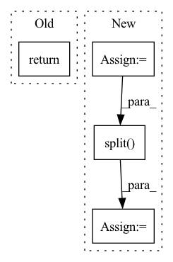

Pattern ID :2683
Before Change
bx_o = [b[o] for b, o in zip(boxes, bo)]
indices = self.matcher(bx_h, bx_o, objects, prior, logits, targets)
return dict(
interaction_loss=self.interaction_loss(bx_h, bx_o, indices, prior, logits, targets)
)
After Change
boxes: List[Tensor], bh: List[Tensor], bo: List[Tensor], objects: List[Tensor],
prior: List[Tensor], logits: Tensor, bbox_deltas: Tensor, targets: List[dict]
) -> Dict[str, Tensor]:
n = [len(b) for b in bh]
bx_h = [b[h] for b, h in zip(boxes, bh)]
bx_o = [b[o] for b, o in zip(boxes, bo)]
bx_h_post, bx_o_post = self.box_pair_coder.decode(torch.cat(bx_h), torch.cat(bx_o), bbox_deltas)
bx_h_post = bx_h_post.split( n) ; bx_o_post = bx_o_post.split(n)
indices = self.matcher(bx_h_post, bx_o_post, objects, prior, logits, targets)
In pattern: SUPERPATTERN
Frequency: 4
Non-data size: 4
Instances Fragment ID: 15148533
Project Name: fredzzhang/upt
Commit Name: def79003d35c81f7efcbcdb738042ec18038995d
Time: 2021-10-28
Author: frederic.zhang@anu.edu.au
File Name: ops.py
M Class Name: SetCriterion
N Class Name: SetCriterion
M Method Name: forward(9)
N Method Name: forward(8)
M Parent Class: nn.Module
N Parent Class: nn.Module
M File Name: ops.py
N File Name: ops.py
M Start Line: 277
M End Line: 283
N Start Line: 305
N End Line: 322
Before Change
attn_list = [attn]
return causal_logits_list, attn_list
def construct_mask(self, N):After Change
dic_z = self.dic.to(device)
prior = self.prior.to(device)
box_size_list = [proposal.bbox.size(0) for proposal in proposals]
feature_split = x.split( box_size_list)
xzs = [self.z_dic(feature_pre_obj, dic_z, prior) for feature_pre_obj in feature_split]
causal_logits_list = [self.causal_score(xz) for xz in xzs]
Fragment ID: 15148532
Project Name: wangt-cn/vc-r-cnn
Commit Name: 51a882a36e8777715669773236cd8285b0d38986
Time: 2020-02-21
Author: wangt97@hotmail.com
File Name: vc_rcnn/vc_rcnn/modeling/roi_heads/box_head/roi_box_predictors.py
M Class Name: CausalPredictor
N Class Name: CausalPredictor
M Method Name: forward(3)
N Method Name: forward(3)
M Parent Class: nn.Module
N Parent Class: nn.Module
M File Name: vc_rcnn/vc_rcnn/modeling/roi_heads/box_head/roi_box_predictors.py
N File Name: vc_rcnn/vc_rcnn/modeling/roi_heads/box_head/roi_box_predictors.py
M Start Line: 96
M End Line: 123
N Start Line: 91
N End Line: 101
Before Change
// returing:
// GPT2Model/Block[2]/MLP[mlp]/Dropout[dropout]
// GPT2Model/Block[2]/aten::add5567
return (self.l_29(self.l_28(torch.mul(input=torch.mul(input=t_33, other=0.5), other=torch.add(input=Tensor.tanh(torch.mul(input=torch.add(input=t_33, other=torch.mul(input=Tensor.pow(t_33, exponent=3), other=0.044715)), other=0.7978845608028654)), other=1)))), t_32)
def state_dict(self,device=None):
// we return the state dict of this part as it should be in the original modelAfter Change
// calling torch.add with arguments:
// GPT2LMHeadModel/GPT2Model[transformer]/Block[2]/aten::add5663
// GPT2LMHeadModel/GPT2Model[transformer]/Block[2]/MLP[mlp]/Dropout[dropout]
t_34 = torch.add(input=t_32, other=self.l_29(self.l_28(torch.mul(input=torch.mul(input=t_33, other=0.5), other=torch.add(input=Tensor.tanh(torch.mul(input=torch.add(input=t_33, other=torch.mul(input=Tensor.pow(t_33, exponent=3), other=0.044715)), other=0.7978845608028654)), other=1)))))
// calling torch.split with arguments:
// GPT2LMHeadModel/GPT2Model[transformer]/Block[3]/Attention[attn]/Conv1D[c_attn]
// GPT2LMHeadModel/GPT2Model[transformer]/Block[3]/Attention[attn]/prim::Constant5779
// GPT2LMHeadModel/GPT2Model[transformer]/Block[3]/Attention[attn]/prim::Constant5780
t_35 = Tensor.split( self.l_31(self.l_30(t_34)), split_size=768, dim=2)
t_36 = t_35[0]
t_37 = t_35[1]
t_38 = t_35[2]
// calling torch.div with arguments:
// GPT2LMHeadModel/GPT2Model[transformer]/Block[3]/Attention[attn]/aten::matmul5854 Fragment ID: 15148547
Project Name: saareliad/ftpipe
Commit Name: 9ddf98456ca57cac3a4a982fc519c5a71642dc25
Time: 2020-03-10
Author: saareliad@campus.technion.ac.il
File Name: models/partitioned/gpt2.py
M Class Name: Partition0
N Class Name: Partition0
M Method Name: forward(2)
N Method Name: forward(2)
M Parent Class: nn.Module
N Parent Class: nn.Module
M File Name: models/partitioned/gpt2.py
N File Name: models/partitioned/gpt2.py
M Start Line: 460
M End Line: 467
N Start Line: 396
N End Line: 430
Before Change
if hx is None:
hx = torch.zeros(input.size(0), self.h_channels, output_size, device=input.device)
// Run the optimized convgru-cell
return _opt_convgrucell_1d(
input,
hx,
self.h_channels,After Change
def forward(self, input, h_prev=None):
// init hidden on forward
if h_prev is None:
h_prev = self.init_hidden(input)
print(f"input: {input.shape} prev: {h_prev.shape}")
combined = torch.cat((input, h_prev), dim=1) // concatenate along channel axis
combined_conv = F.sigmoid(self.conv_zr(combined))
z, r = torch.split( combined_conv, self.hidden_dim, dim=1)
h_ = self.activation(self.conv_h1(input) + r * self.conv_h2(h_prev))
h_cur = (1 - z) * h_ + z * h_prev Fragment ID: 15148557
Project Name: openclimatefix/skillful_nowcasting
Commit Name: 02c5ceadd01484d6ac8bce848ff76446fe7a6917
Time: 2021-10-18
Author: jacob@bieker.tech
File Name: nowcasting_gan/layers/ConvGRU.py
M Class Name: ConvGRU1DCell
N Class Name: ConvGRUCell
M Method Name: forward(3)
N Method Name: forward(3)
M Parent Class: nn.Module
N Parent Class: nn.Module
M File Name: nowcasting_gan/layers/ConvGRU.py
N File Name: nowcasting_gan/layers/ConvGRU.py
M Start Line: 83
M End Line: 101
N Start Line: 69
N End Line: 82